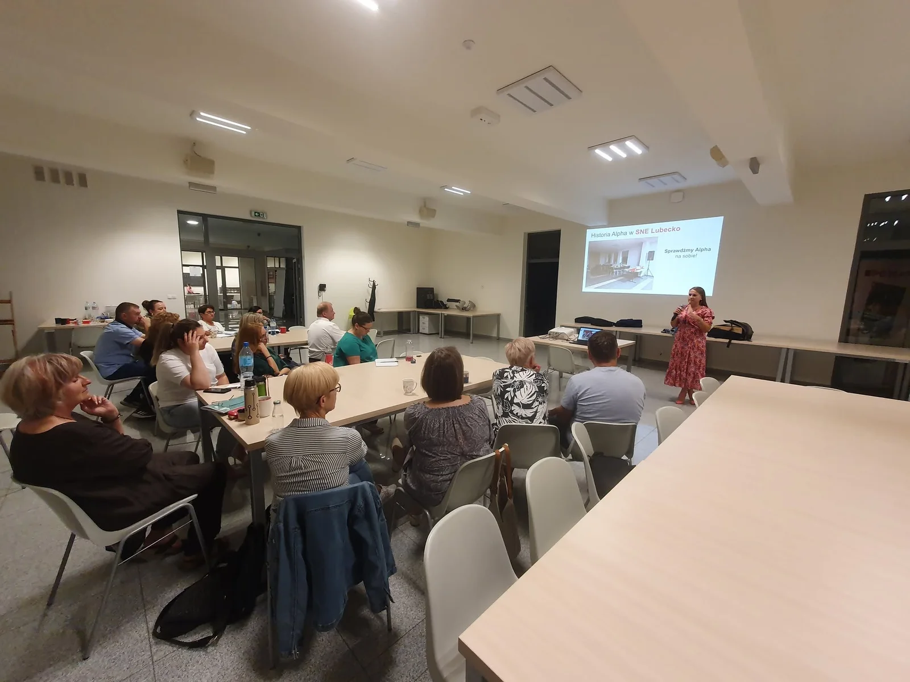
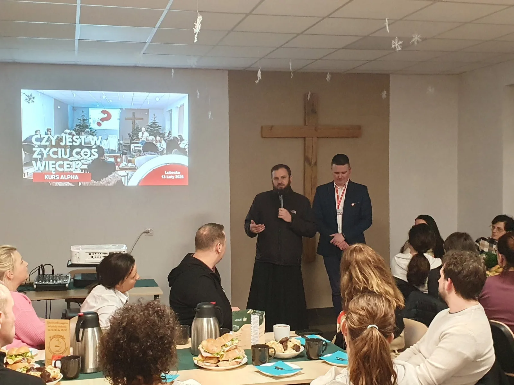
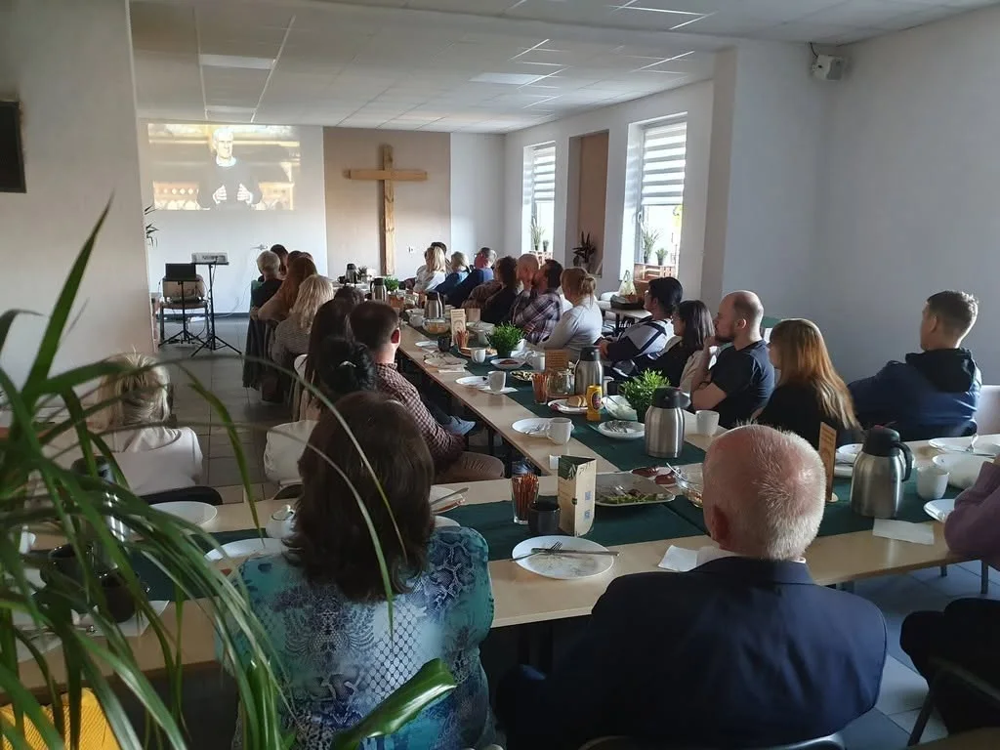

1. Szkolenie na temat kursu Alpha
Szkolenie przełamuje lęki związane z pochodzeniem i formą kursu, zachęca ludzi oraz pokazuje najlepsze praktyki jego prowadzenia. Kończy się przedstawieniem wizji Alpha i Bożej renowacji parafii.
Zacznij Alpha
Dobra Alpha nie musi zaczynać się od dużej ekipy. Pomagamy parafiom przejść spokojną drogę: od szkolenia i własnego doświadczenia po samodzielne prowadzenie kursu.
Zatwierdzony plan wdrożenia
Ta droga pomaga uniknąć niepotrzebnych napięć, szczególnie tam, gdzie zespół i wspólnota tworzą się niemal od zera.
Szkolenie przełamuje lęki związane z pochodzeniem i formą kursu, zachęca ludzi oraz pokazuje najlepsze praktyki jego prowadzenia. Kończy się przedstawieniem wizji Alpha i Bożej renowacji parafii.
Gdy jest zbyt mało osób na wewnętrzną edycję, udział w dobrze przygotowanym kursie może być pierwszym krokiem. Dobra Alpha zostaje potem punktem odniesienia przy organizacji kolejnych.
Przyszli organizatorzy przeżywają Alpha spokojnie, bez dużego obciążenia posługą. Każdy może sam odkryć, czym jest kurs, i zdobyć własne doświadczenie działania Boga.
Po jednej edycji przeszkolona ekipa jest gotowa poprowadzić kurs publiczny — z marketingiem, zaproszeniami, zapisami i na większą skalę. RCA może pomóc od strony dyrektorskiej, szkoleniowej oraz w przeprowadzeniu Dnia lub weekendu Alpha.
Po dwóch edycjach parafia powinna móc samodzielnie prowadzić Alpha. Ważne jest wyłonienie lokalnych liderów — koordynatorów oraz duszpasterza, który duchowo poprowadzi tematy przebaczenia, modlitwy o wylanie i modlitwy o uzdrowienie.

Gdy zespół ma doświadczenie
Jeśli w parafii działa wspólnota charyzmatyczna mająca już pewne doświadczenie, droga może przebiec szybciej. Pierwsza Alpha — opisana wyżej jako wewnętrzna — może być wtedy publiczna, a samodzielne prowadzenie kursu może rozpocząć się już w punkcie czwartym.
Nie chodzi o skracanie drogi za wszelką cenę, lecz o dobranie jej do realnych możliwości zespołu.
Przed organizacją
Te pytania pomagają ustalić właściwy etap i przygotować kurs na miarę parafii.
Dla świeckich i proboszczów
Często pierwszy impuls przychodzi od osoby świeckiej. Możemy wspólnie z nią i z proboszczem rozpoznać sytuację parafii, wybrać etap oraz przygotować spokojny start.
Porozmawiajmy o Waszej parafii
Najczęstsze pytania
Przygotowaliśmy osobną stronę z odpowiedziami dla parafii i wspólnot: o pierwszym kroku, zespole, wsparciu RCA, miejscu spotkań oraz samodzielnym prowadzeniu Alpha.
Otwórz pytania przed Alpha